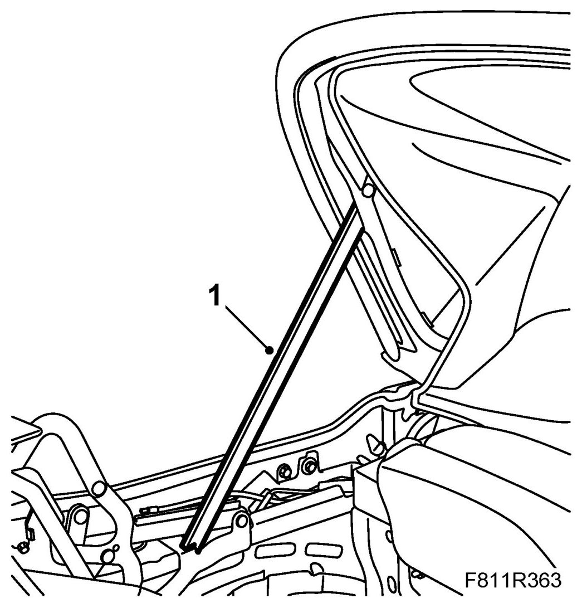
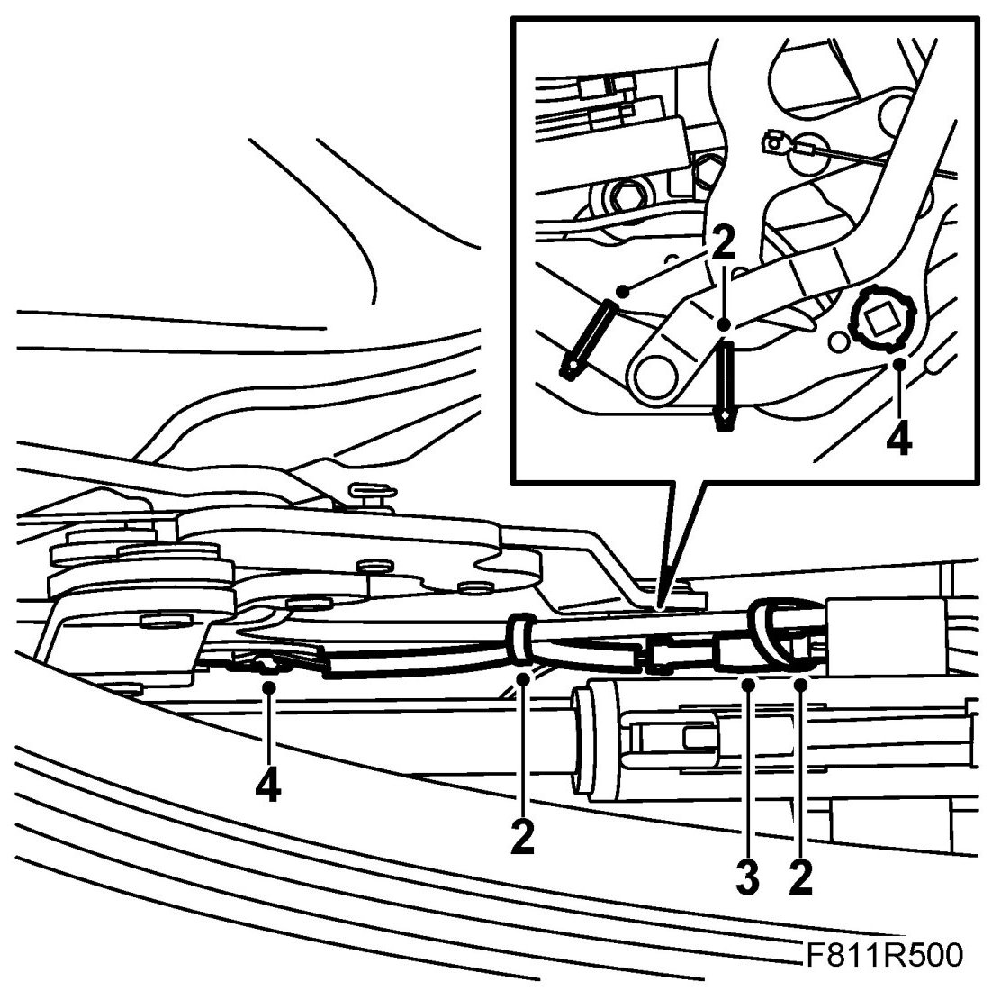
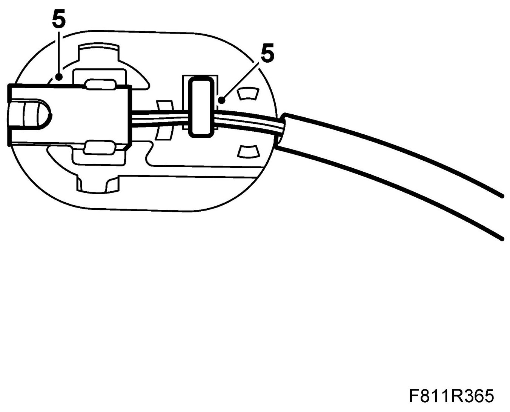
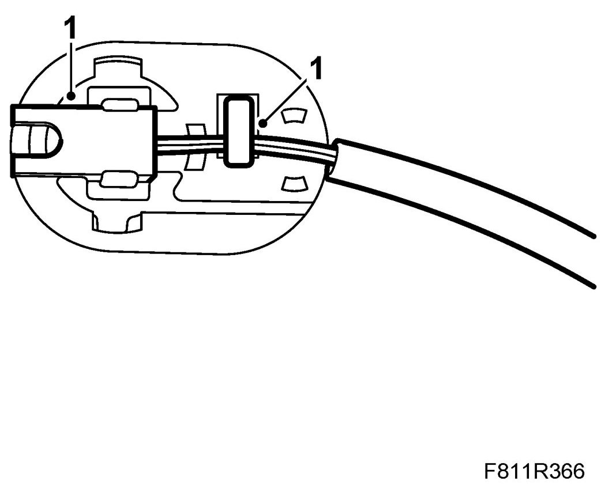
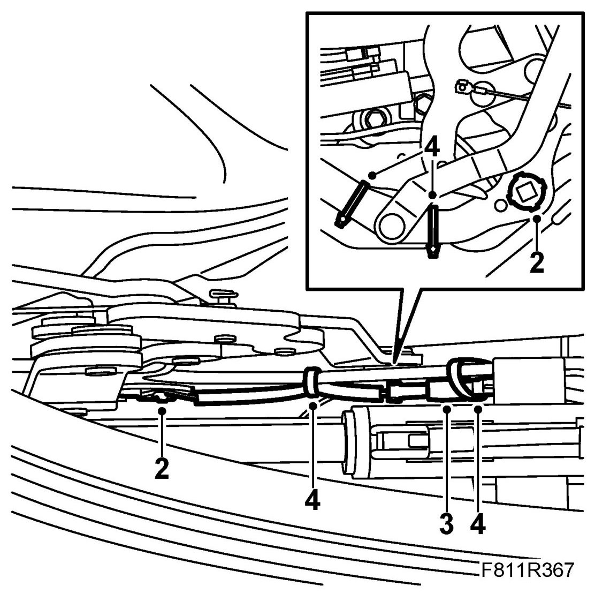

Position Sensor, Soft Top Cover Locked (562LH/RH)
Position Sensor, Soft Top Cover Locked (562LH/RH)
To remove
Only the method for changing the position sensor on the right-hand side is described below. The same method applies to changing the sensor on the left-hand side.
1. Open the soft top cover. Raise the sixth bow and support it with 82 93 847 Soft top support.

2. Remove the cable tie on the position sensor cable. Note the location of the cable ties.

3. Unplug the position sensor cable.
4. Remove the position sensor from the soft top cover hinge using a screwdriver.
5. Remove the position sensor from the plastic holder.

To fit
1. Fit the position sensor to the plastic holder.

2. Fit the position sensor to the soft top cover hinge.

3. Connect the position sensor cable connector.
4. Fit the cable tie to the position sensor.
IMPORTANT: Cables to hydraulic lines and position sensors must be refitted as they were earlier or there will be a risk of them being damaged when the soft top and soft top cover are operated.
5. Remove the soft top support and raise the soft top.
6. Test the operation of the soft top.
7. Connect the diagnostics tool and erase any diagnostic trouble code.